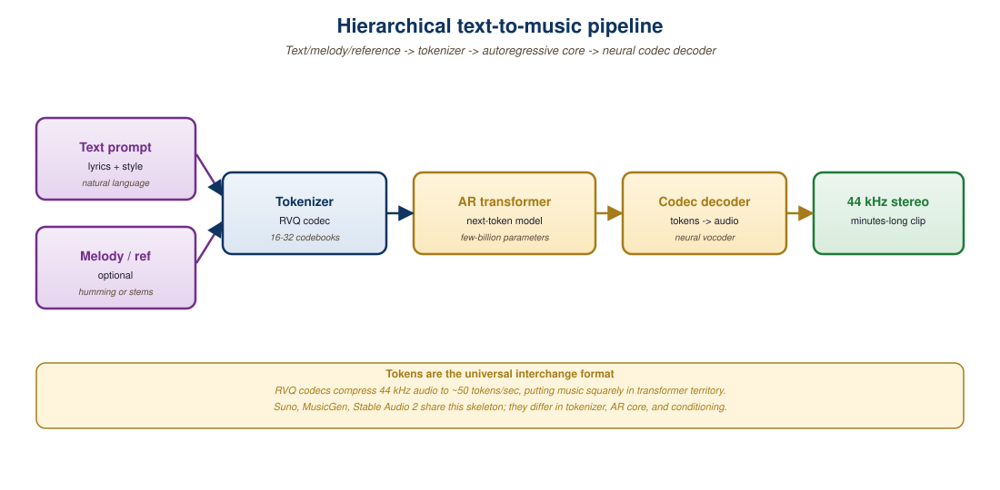

"In 2023 we were thrilled when a neural model could produce 30 seconds of coherent indie folk. In 2025 Suno v5 ships full three-minute pop singles with verse-chorus structure, intelligible lyrics, and a hook you cannot get out of your head. The state of the art moves in months, not years."
Author's notes after the Suno v5 launch, October 2025
Music generation followed the same trajectory as text-to-image but compressed into two years. MusicLM (Google, January 2023) was the proof of concept; MusicGen (Meta, June 2023) shipped the first open-source recipe; Suno (V1 in late 2023, V5 in October 2025) and Udio (V1 in April 2024, V3 in early 2025) turned it into a consumer category with paying users measured in the millions. The architectural core in every case is the same machinery as Chapter 20.1's TTS: a neural audio codec (EnCodec, SoundStream, DAC) compresses raw audio into a discrete token stream, and a transformer language model autoregresses over those tokens conditioned on text. What changes across systems is the codec, the conditioning, and the scale. This section unpacks all three, then walks the 2026 commercial landscape and the open-source baseline you can run on a single GPU.
1. Audio Codecs: The Tokenizer of Music
Raw 44.1 kHz stereo audio is 1.4 megabits per second; a four-minute song is 40 megabytes. No transformer is going to autoregress over 88,000 floating-point samples per second of audio. The bridge between waveforms and language models is the neural audio codec: a VQ-VAE-style encoder-decoder that compresses audio to a sequence of discrete tokens at a manageable rate (typically 50-75 tokens per second per residual codebook, with 4-32 codebooks stacked).
Three codecs dominate the field. EnCodec (Defossez et al., Meta, 2022) was the first widely used neural codec; it operates at 24 kHz with 8 residual codebooks at 75 Hz, giving 600 tokens per second of audio. SoundStream (Zeghidour et al., Google, 2021) preceded EnCodec and uses a similar residual-VQ structure; MusicLM uses SoundStream tokens directly. DAC (Descript Audio Codec, Kumar et al., 2023) supports 44.1 kHz stereo and is the codec of choice for music-quality systems; it produces about 86 tokens per second per codebook with 9 codebooks. Suno and Udio are widely believed to use proprietary codecs derived from DAC.
The maximum audio quality a music-generation system can produce is bounded above by the reconstruction quality of its codec at the bitrate the LM autoregresses over. If your codec sounds like AM radio when you encode and decode a Beatles song without any LM in between, then any LM trained on top will produce AM-radio music no matter how big the LM is. The 2024 jump from MusicGen-quality output to Suno-quality output was driven as much by codec improvements (44.1 kHz stereo, higher bitrate, better psychoacoustic objectives) as by transformer scaling. When you are evaluating open recipes for production, listen to a pure codec round-trip first; that is the ceiling.
2. MusicGen: The Open-Source Baseline
MusicGen (Copet et al., Meta, 2023, arXiv:2306.05284) is the reference open-source music generator. It comes in 300M, 1.5B, and 3.3B parameter sizes. The architecture is a single transformer decoder that autoregresses over EnCodec tokens at 32 kHz, conditioned on text via a frozen T5 encoder (or melody via a chromagram for the melody-conditioned variant). The clever piece is the "delay pattern" interleaving: instead of generating one full codebook then the next, MusicGen interleaves codebooks with offset delays so the model never has to predict more than one codebook in a single forward pass, sharply reducing the effective vocabulary at each step and the cost of long-context modeling.
MusicGen at 3.3B can produce 30-second clips that are clearly identifiable as the prompted genre, with discernible chord progressions and rhythm. It struggles with vocals, song structure beyond a single section, and long-term coherence. As a baseline for fine-tuning or as a teaching artifact for "how does this work," it is the model to study; as a finished product, it is two years behind the commercial frontier.
# MusicGen 30-second clip via the AudioCraft library
# pip install audiocraft
from audiocraft.models import MusicGen
from audiocraft.data.audio import audio_write
# 3.3B parameter checkpoint; fits in 12 GB of VRAM at fp16.
model = MusicGen.get_pretrained("facebook/musicgen-large")
model.set_generation_params(
duration=30, # 30-second clip
top_k=250, # MusicGen-recommended sampling
top_p=0.0, # top_k only
temperature=1.0,
cfg_coef=3.0, # classifier-free guidance
)
prompts = [
"an upbeat 90 BPM lo-fi hip-hop track with a warm Rhodes piano "
"and a vinyl crackle texture, perfect for late-night studying",
"a cinematic orchestral piece in C minor with a soaring french horn "
"melody over pulsing strings, building to a triumphant climax",
]
wavs = model.generate(prompts) # shape: (batch, channels, samples)
for idx, wav in enumerate(wavs):
audio_write(f"clip_{idx}", wav.cpu(), model.sample_rate,
strategy="loudness", loudness_compressor=True)
print(f"Wrote clip_{idx}.wav at {model.sample_rate} Hz")strategy="loudness": MusicGen output is typically low-volume and needs LUFS normalization for production.3. MusicLM and the Hierarchical Semantic-Acoustic Pattern
MusicLM (Agostinelli et al., Google, 2023, arXiv:2301.11325) predates MusicGen by a few months and uses a more elaborate hierarchical decomposition. It cascades three models: SoundStream produces acoustic tokens at 600 Hz, w2v-BERT produces "semantic" tokens at 25 Hz representing high-level musical structure, and MuLan (a text-music CLIP-style joint embedding model) produces conditioning tokens from the text prompt. The pipeline generates MuLan tokens (text -> joint embedding), then semantic tokens (high-level structure), then acoustic tokens (audio-quality SoundStream codes), and finally decodes to waveform. The structural decomposition is the same idea Bark uses for speech (Section 20.1, Section 3), and it shows up again in Suno's reported pipeline.
Google never released MusicLM weights, but the architecture is documented and recipes for hierarchical music generation (Open MuLan, the AudioLM lineage) are public. The hierarchical pattern matters because pure end-to-end token generation over 30 seconds of 44.1 kHz audio requires very long contexts and very expensive training; factoring the problem into semantic + acoustic layers makes both parts tractable.
4. Suno, Udio, and AIVA: The Commercial Frontier
Suno is the consumer leader. Suno V3 (March 2024) was the first system to generate full songs with vocals, lyrics, and recognizable verse-chorus structure under user control. V4 (late 2024) added longer outputs (up to 4 minutes) and better lyric intelligibility. V5 (October 2025) ships with stem outputs (separate vocal, drums, bass, and instrument stems), genre interpolation between two reference prompts, and an extend mode that adds a chorus or bridge to existing user-provided audio. Suno's reported architecture is a hierarchical codec LM (semantic + acoustic, plus a separate text-to-lyric model) trained on tens of thousands of hours of licensed music, with proprietary codec improvements.
Udio (April 2024) is the closest competitor. Udio V1 launched within weeks of Suno V3 and made comparable claims; V3 (early 2025) added precise prosody control over lyrics, instrumentals-only mode, and a "remix" feature where the user supplies a melodic motif. Udio's audio quality at the high end is often judged equal to Suno's; the systems differ more in default style biases (Udio leans cleaner and more pop-produced; Suno leans grittier and more genre-promiscuous).
AIVA (Artificial Intelligence Virtual Artist) is the longest-running commercial music AI, dating to 2016. AIVA targets composers and film scorers rather than consumers: it ships symbolic MIDI output that the user can edit in a DAW, multi-instrument scores in classical and cinematic styles, and royalty-free licensing terms designed for media production. AIVA is the right tool when you need editable score output; Suno and Udio are right when you need finished audio.
| System | Year | Format | Max Length | Vocals | Stems | Notes |
|---|---|---|---|---|---|---|
| MusicGen 3.3B | 2023 | Open weights | 30 s | No | No | Reference open implementation |
| MusicLM | 2023 | Closed (paper only) | 5 min | Hummed only | No | Hierarchical SoundStream + w2v-BERT |
| Suno V5 | 2025 | SaaS | 4 min | Yes (lyric input) | Yes (V5+) | Genre interpolation, extend mode |
| Udio V3 | 2025 | SaaS | 4 min | Yes | Partial (vocals only) | Strong on cleaner pop production |
| AIVA | 2016-2026 | SaaS + MIDI | Unlimited | No (symbolic only) | Per-instrument MIDI | For composers, not consumers |
| Stable Audio 2.5 | 2025 | Open weights + paid | 3 min | No | No | Diffusion in latent audio space |
| Riffusion | 2022-2024 | Open weights | 5 s loops | No | No | Spectrogram-as-image diffusion |
A small YouTube creator producing weekly 10-minute essays used to pay \$25 per track for stock music from Epidemic Sound, totaling about \$1,300 a year for 50 episodes. In 2025 the same creator subscribes to Suno Pro (\$24/month) and Udio Pro (\$30/month), generates 5-10 candidate tracks per episode, picks the best two, and ends up with a budget under \$700 a year and signature music nobody else has. The catch is rights: Suno and Udio both grant commercial use of generated audio to paid subscribers, but the legal question of who owns AI-generated music in derivative-of-training-data terms is still unresolved in the US (per the 2024 RIAA v. Suno and RIAA v. Udio lawsuits). Most creators accept this risk for ad-supported YouTube content but avoid using AI music in brand-sponsored work.
5. Conditioning: Text, Melody, and Reference Audio
Music generation systems support several conditioning modalities beyond text. Text prompts are the universal interface; the model is trained with paired text-music data (LP captions, Spotify metadata, expert tags from MusicCaps). Melody conditioning takes a chromagram or a humming clip and generates a full arrangement that follows the user's melodic intent; MusicGen-melody, Suno's "extend with this idea" mode, and Udio's remix feature all use this. Reference audio conditioning passes a short clip of an existing song and asks the model to produce something stylistically similar; this is the most controversial mode because of the obvious copyright implications, and the commercial APIs add safeguards that prevent verbatim cloning of known recordings. Lyric conditioning is unique to vocals-capable systems (Suno, Udio); the user provides text and the model synthesizes vocals that pronounce those lyrics over the generated instrumental.
Lyric intelligibility in 2026 systems is still notably lower than spoken-word TTS intelligibility. The reason is structural: vocals are heavily processed in production (compression, reverb, doubling, harmonization), and the codec LM has to predict the produced waveform, not the dry vocal. Suno V5 and Udio V3 both ship "clean vocal" modes that produce a more intelligible but less polished result; in production you typically pick one or the other per use case rather than expecting both at the same time.
6. The Rights and Training Data Question
Every commercial music generator faces the same legal question: what music was it trained on, and what license terms apply to the outputs? The 2024 lawsuits (RIAA suing Suno and Udio, separately) argue that both systems were trained on unlicensed copies of major-label recordings, that the outputs can be made to sound like specific artists, and that this constitutes infringement at training time and at inference time. Suno and Udio's defenses center on fair use of training data and substantial transformation of outputs. The lawsuits are unresolved as of late 2025, and they will set precedent for the entire music AI category.
The technical countermeasures the platforms have adopted include: (1) training-data filtering to remove known commercial recordings (claimed by both companies, hard to verify), (2) output-side filtering that blocks generations matching the audio fingerprint of any known recording (Suno added this in V4), (3) opt-out registries for artists who do not want their style imitated (Suno's "Studio" program), and (4) revenue-sharing pilots with select labels (Udio's 2025 deal with Beatport for electronic music). None of these resolves the underlying training-data question, but they shape the product into something defensible.

A favorite consumer demo of 2025 is the iPhone hum-to-song workflow: open Voice Memos, hum a melody for 15 seconds, drop the clip into Udio with prompt "turn this into a stadium-rock anthem in the style of Queen with full band and harmonies." Thirty seconds later you have a four-minute single. Songwriters used to call this the "\$50k demo budget" stage of pitching to a label; in 2025 it is two minutes on a phone. Whether that is empowering or terrifying depends on which side of the table you sit on.
7. Production Music and the Mid-Tier Stack
Below the consumer-finished Suno/Udio tier and above the research-baseline MusicGen tier sits the production-music middle: Stability AI's Stable Audio 2.5 (latent diffusion over audio, 44.1 kHz, up to 3 minutes), Splice's CoSo (loop-and-stem generation aimed at producers in DAWs), and Soundraw and Boomy (consumer-facing services that license out-of-the-box royalty-free tracks). Stable Audio in particular is interesting because it uses diffusion rather than codec-LM generation; the underlying autoencoder produces a latent representation at 21 Hz over which a latent DiT denoises. This is closer to image diffusion than to text-to-speech generation, and it leads to qualitatively different outputs (Stable Audio is strong at ambient, electronic, and sound-design textures; weaker at lyric-driven pop).
The mid-tier matters for production because it ships under licenses that commercial users find acceptable (full ownership of outputs, no per-use royalty), and because it integrates with DAWs (Logic Pro, Ableton Live, FL Studio) via plugins. A 2026-era audio professional typically uses several systems in a single project: Suno for first-draft songs, Stable Audio for ambient beds, AIVA for editable orchestral cues, and a human producer to glue it all together.
Music generation is TTS scaled to longer contexts, higher bitrates, and conditioning on melody and lyrics instead of just text. Three architectural patterns recur: codec-LM autoregression (MusicGen, Suno, Udio), hierarchical semantic-plus-acoustic generation (MusicLM), and latent audio diffusion (Stable Audio). The commercial frontier (Suno V5, Udio V3) ships consumer-finished songs with vocals and structure; open recipes (MusicGen) ship 30-second clips. Codec quality and training-data licensing are the two bottlenecks; the model architecture is mostly solved.
- EnCodec at 24 kHz with 8 codebooks at 75 Hz produces 600 tokens per second. A four-minute Suno song is 240 seconds. Compute the total token count; compare to GPT-4's 128k-token context; and sketch why hierarchical semantic-plus-acoustic generation (Section 3) is necessary in practice for full-song output.
- Stable Audio uses latent diffusion over a 21 Hz audio representation, while MusicGen uses codec-LM autoregression over a 50-75 Hz representation. Which architectural choice is better suited to long ambient textures, which is better suited to short lyric-driven pop, and why?
- The RIAA v. Suno lawsuit alleges that the model was trained on unlicensed commercial recordings. List the technical countermeasures that would let Suno credibly defend the training-data side of the case while still producing competitive output.
What Comes Next
Section 20.4 leaves pure generation behind and asks: once we have a music or speech clip, how do we edit it? Stem separation, audio inpainting, and style transfer are the post-production sister disciplines of generation.
Further Reading
- Copet, J. et al. (2023). Simple and Controllable Music Generation (MusicGen). NeurIPS 2023. arXiv:2306.05284. The MusicGen architecture and the delay-pattern interleaving trick.
- Agostinelli, A. et al. (2023). MusicLM: Generating Music From Text. arXiv:2301.11325. The hierarchical semantic-plus-acoustic pattern; foundational for Suno's reported architecture.
- Defossez, A. et al. (2022). High Fidelity Neural Audio Compression (EnCodec). arXiv:2210.13438. The 24-kHz residual-VQ neural codec underlying MusicGen and Bark.
- Kumar, R. et al. (2023). High-Fidelity Audio Compression with Improved RVQGAN (DAC). arXiv:2306.06546. The 44.1-kHz stereo codec used by Stable Audio and (in derived form) by the music-quality commercial systems.
- Suno (2025). Suno V5: Stems, Genre Interpolation, and Extend Mode. suno.com/blog/v5. The October 2025 product announcement; documents the V5 feature set used in production.
- Udio (2025). Udio V3 Release Notes. udio.com/blog/v3. The V3 feature documentation including remix and instrumentals-only modes.
- Stability AI (2024). Stable Audio 2: Diffusion for Music Generation. stability.ai/news/stable-audio-2-0. The latent-diffusion alternative to codec-LM music generation.
- RIAA (2024). RIAA v. Suno; RIAA v. Udio. riaa.com. The 2024 lawsuits that will set legal precedent for music-AI training data.